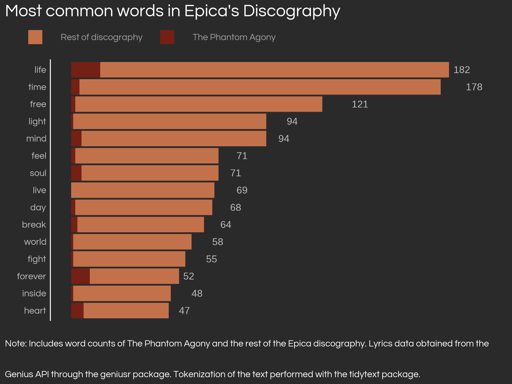
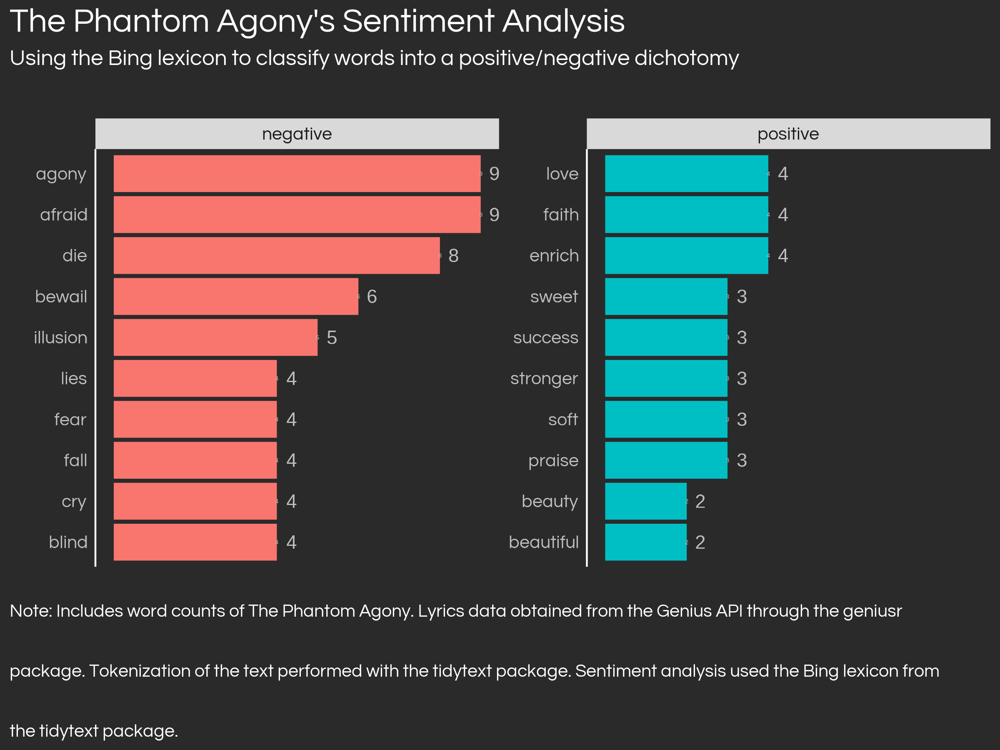
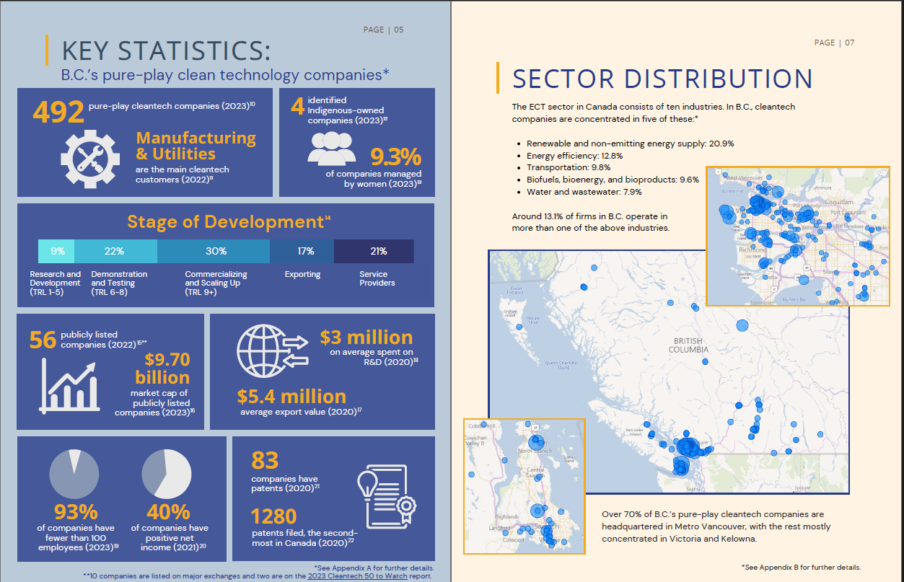
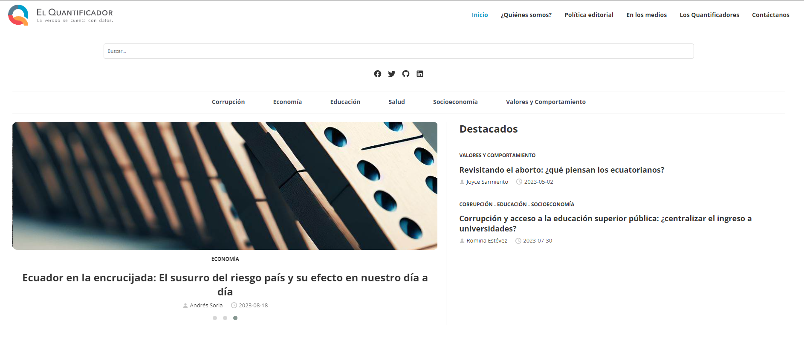
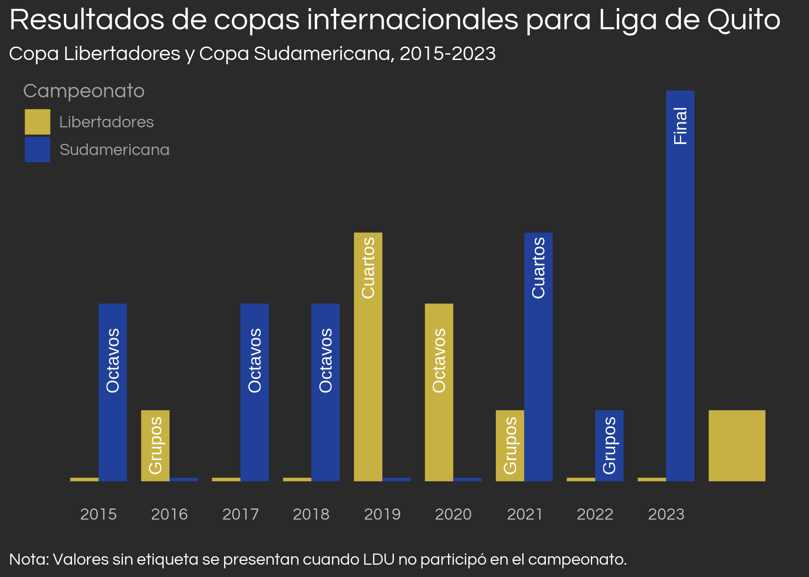

Data Portfolio
This section of my website holds my data work with self-contained projects that showcase several skills in data management, analytics/science and visualization, mostly using R, but there are also projects which use Power BI and Tableau. Use the headers to your right to select different projects.
Most projects have GitHub repositories with open-source code (with Creative Commons licenses), which are reacheable through the included GitHub links. Enjoy!
Sentiment analysis of music lyrics
Part of a personal blog post which uses several musical data sources to perfom analyses of musical data on the dutch symphonic metal band, Epica. I perform tidy text analysis with different lexicons after tokenizing all lyrics from Epica’s discography, sourced from the Genius API. It involved complex data cleaning through table reshaping, record linkage and fuzzy joins.

Visualizing Music Trends using the Last.fm API
This Tableau dashboard sources scrobble data from the Last.fm API and visualizes it in simple, attractive charts. Scrobbles come from my own account on Last.fm, yet the exercise can be done with any public account which chooses to show scrobbles publicly. The data was sourced and preparared using R.
Link to GitHub repository for data preparation code.
Superstore Delivery Time Analytics
I give the classic Superstore dataset a twist by analyzing delivery times instead of sales in this Power BI dashboard. Be sure to turn on maps from your security options in Power BI desktop to see the full functionality of the file.
- Link to Power BI Dashboard files (.pbix) ^[It is not possible to openly deploy Power BI dashboards as it is on Tableau or Shiny. However, to visualize this dashboard you only need to download Power BI desktop on your computer, which is free. The only issue is that it is only available for Windows.

Clean technology companies in Canada
This is a series of work produced during my time as a Junior Data Analyst in the Clean Technology Economic Analysis Unit team at Natural Resources Canada, which I cannot claim as mine but part of a team effort of highly skilled professionals in NRCan.
Canadian Pureplay Clean Technology Companies Dashboard
A Power BI Dashboard that visualizes the number of Canadian pureplay clean technology companies across provinces and subindustries in the country.

British Columbia Clean Technology Companies Profile
A sector profile on British Columbia’s clean technology sector. Developed in collaboration with Trade & Invest British Columbia.

Analyzing public opinion from survey data
After a series of protests developed in Ecuador in July 2022, I analyzed public opinion variables to try to understand the public sentiment behind the protest. I implement survey design adjustments from the AmericasBarometer survey to correct for oversampling of some regions and to present survey-robust confidence intervals in visualizations.
Note

Research: Differences-in-differences with COVID-19 administrative data in Ecuador
In 2022 I was able to publish a paper (in English) in an Ecuadorian peer-reviewed journal. The paper used a two-way fixed effects differences-in-differences estimator to estimate the causal effect of COVID-19 vaccination on business creation on Ecuadorian provinces. The key result was that provinces which showed apparent reluctancy to vaccinate saw about 25% less business creation than provinces that didn’t.

Research: Survey-weighted logistic regression to investigate corruption at the individual level
In early 2023, I was able to publish another peer-reviewed paper in Virginia Tech’s peer-reviewed journal, The Philosophy, Politics, and Economics Review. In this paper, I use survey-weighted logistic regression to investigate the drivers of a mysterious increase in corruption tolerance in Ecuador between 2014 and 2016, finding that political identification and presidential approval drove the change.

Web development with R
I have been able to collaborate on a few website development efforts using R. See below for details.
Personal website
This website (daniel-ec.netlify.app) is built using Quarto, next generation’s RMarkdown, and R. I built it from scratch with the help of the great documentation available in the Quarto website and the many examples available in the open source community. The website is hosted through a free Netlify domain. It includes both a typical “website” section and a blog section, which mimics using the blogdown format.

El Quantificador
El Quantificador is a blog on social issues created by the Ecuadorian Development Research Lab (LIDE, for its initials in Spanish), an Ecuadorian research nonprofit. I have been able to collaborate on the development of the blog, which is built using blogdown and a Hugo theme.

The website deploys several RMarkdown files, with complex data analysis and visualization components, including a Shiny app The website is hosted through a free Netlify domain.

LIDE has produced other websites using R and blogdown, where I’ve also collaborated, including its main website, and a project website for New Dimensions.
Projects in Spanish
These projects are short articles with significant data analysis and/or visualization components that I have written in Spanish. They are either published in El Quantificador, a blog on social issues created by the Ecuadorian Research Development Lab, an Ecuadorian research nonprofit or in my personal blog. I have listed the links to the direct text in Spanish and to the GitHub repository where the code is hosted. I plan to work on AI-assisted translations of these articles in the future.
The throne in Ponceano: Liga de Quito’s statistics in R
In late 2023, the best football club in Ecuador, Liga Deportiva Universitaria, was able to pass to the Copa Sudamericana final stage after more than a decade of no international titles. I analyzed the team’s statistics in R to understand how the team has been performing in the last few years, using R to access football statistics providers like Transfermarkt or FBref.
Original title in Spanish: El trono en Ponceano: Liga de Quito en cifras con R.

Homosexuality: what do Ecuadorians think about it? (coauthored with Alonso Quijano-Ruiz)
Along with Alonso Quijano, we analyzed public opinion data from the World Values Survey to understand how homosexuality is viewed in Ecuador.
Original title in Spanish: Homosexualidad: ¿qué piensan los ecuatorianos?. ISSN 2953-6456.

A quantitative perspective on the Ecuadorian protests
The original version of Section 5, written originally in Spanish for El Quantificador and reposted in Spanish and English in my personal blog.
Original title in Spanish: Una perspectiva cuantitativa sobre las protestas en Ecuador. ISSN 2953-6456.